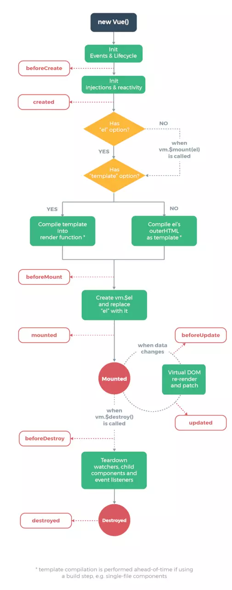

1.1 Vue的引入
Vue的使用按照官方的说法支持CDN和NPM两种方式，CDN的方式是以script的方式将打包好的vue.js引入页面脚本中，而NPM的方式是和诸如 webpack 或 Browserify 模块打包器配置使用，以npm install vue的方式引入，这也是我们开发应用的主要形式。而从单纯分析源码思路和实现细节的角度来讲，打包后的vue.js在分析和提炼源码方面会更加方便，所以这个系列的源码分析，使用的是打包后的vue脚本，版本号是v2.6.8
1.1.1 基础使用
分析的开始当然是vue的基础使用，我们引入了vue.js并且new了一个Vue实例，并将它挂载到#app上，这是最基础的用法。
<div id="app"></div>
<script src="https://cdn.jsdelivr.net/npm/vue@2.6.8/dist/vue.js"></script>
<script>
var vm = new Vue({
el: '#app',
data: {
message: '选项合并'
},
})
</script>
虽然这一节的重点是阐述Vue的选项配置，从选项配置入手也是我们从零开始品读源码最容易开始的思路，但是为了分析的完整性，避免后续出现未知的概念，有必要先大致了解一下vue在脚本引入之后分别做了什么。
1.1.2 Vue构造器
打包后的源码是遵从UMD规范的，它是commonjs和amd的整合。而Vue的本质是一个构造器,并且它保证了只能通过new实例的形式去调用，而不能直接通过函数的形式使用。
(function (global, factory) {
// 遵循UMD规范
typeof exports === 'object' && typeof module !== 'undefined' ? module.exports = factory() :
typeof define === 'function' && define.amd ? define(factory) :
(global = global || self, global.Vue = factory());
}(this, function () { 'use strict';
···
// Vue 构造函数
function Vue (options) {
// 保证了无法直接通过Vue()去调用，只能通过new的方式去创建实例
if (!(this instanceof Vue)
) {
warn('Vue is a constructor and should be called with the `new` keyword');
}
this._init(options);
}
return Vue
})
1.1.3 定义原型属性方法
Vue之所以能适应基础的开发场景，除了经常提到的支持组件化开发，以及完善的响应式系统等外，还有重要的一点是它提供了丰富的api方法，不管是静态还是原型方法，它们都丰富到足以满足我们日常基础的开发需求。所以熟练阅读vue-api文档并精准使用api方法是迈向熟练开发的前提。接下来我们看看这些方法属性是在哪里定义的，注意，该小节会忽略大部分属性方法具体的实现，这些详细的细节会贯穿在后续系列的分析中。
首先是原型上的属性方法，在构造函数的定义之后，有这样五个函数，他们分别针对不同场景定义了Vue原型上的属性和方法。
// 定义Vue原型上的init方法(内部方法)
initMixin(Vue);
// 定义原型上跟数据相关的属性方法
stateMixin(Vue);
//定义原型上跟事件相关的属性方法
eventsMixin(Vue);
// 定义原型上跟生命周期相关的方法
lifecycleMixin(Vue);
// 定义渲染相关的函数
renderMixin(Vue);
我们一个个看，首先initMixin定义了内部在实例化Vue时会执行的初始化代码，它是一个内部使用的方法。
function initMixin (Vue) {
Vue.prototype._init = function (options) {}
}
stateMixin方法会定义跟数据相关的属性方法，例如代理数据的访问，我们可以在实例上通过this.$data和this.$props访问到data,props的值，并且也定义了使用频率较高的this.$set,this.$delte等方法。
function stateMixin (Vue) {
var dataDef = {};
dataDef.get = function () { return this._data };
var propsDef = {};
propsDef.get = function () { return this._props };
{
dataDef.set = function () {
warn(
'Avoid replacing instance root $data. ' +
'Use nested data properties instead.',
this
);
};
propsDef.set = function () {
warn("$props is readonly.", this);
};
}
// 代理了_data,_props的访问
Object.defineProperty(Vue.prototype, '$data', dataDef);
Object.defineProperty(Vue.prototype, '$props', propsDef);
// $set, $del
Vue.prototype.$set = set;
Vue.prototype.$delete = del;
// $watch
Vue.prototype.$watch = function (expOrFn,cb,options) {};
}
eventsMixin会对原型上的事件相关方法做定义，文档中提到的vm.$on,vm.$once,vm.$off,vm.$emit也就是在这里定义的。
function eventsMixin(Vue) {
// 自定义事件监听
Vue.prototype.$on = function (event, fn) {};
// 自定义事件监听,只触发一次
Vue.prototype.$once = function (event, fn) {}
// 自定义事件解绑
Vue.prototype.$off = function (event, fn) {}
// 自定义事件通知
Vue.prototype.$emit = function (event, fn) {
}
lifecycleMixin,renderMixin两个都可以算是对生命周期渲染方法的定义，例如$forceUpdate触发实例的强制刷新，$nextTick将回调延迟到下次 DOM 更新循环之后执行等。
// 定义跟生命周期相关的方法
function lifecycleMixin (Vue) {
Vue.prototype._update = function (vnode, hydrating) {};
Vue.prototype.$forceUpdate = function () {};
Vue.prototype.$destroy = function () {}
}
// 定义原型上跟渲染相关的方法
function renderMixin (Vue) {
Vue.prototype.$nextTick = function (fn) {};
// _render函数，后面会着重讲
Vue.prototype._render = function () {};
}
1.1.4 定义静态属性方法
除了原型方法外，Vue还提供了丰富的全局api方法，这些都是在initGlobalAPI中定义的。
/* 初始化构造器的api */
function initGlobalAPI (Vue) {
// config
var configDef = {};
configDef.get = function () { return config; };
{
configDef.set = function () {
warn(
'Do not replace the Vue.config object, set individual fields instead.'
);
};
}
// 通过Vue.config拿到配置信息
Object.defineProperty(Vue, 'config', configDef);
// 工具类不作为公共暴露的API使用
Vue.util = {
warn: warn,
extend: extend,
mergeOptions: mergeOptions,
defineReactive: defineReactive###1
};
// Vue.set = Vue.prototype.$set
Vue.set = set;
// Vue.delete = Vue.prototype.$delete
Vue.delete = del;
// Vue.nextTick = Vue.prototype.$nextTick
Vue.nextTick = nextTick;
// 2.6 explicit observable API
Vue.observable = function (obj) {
observe(obj);
return obj
};
// 构造函数的默认选项默认为components,directive,filter, _base
Vue.options = Object.create(null);
ASSET_TYPES.forEach(function (type) {
Vue.options[type + 's'] = Object.create(null);
});
// options里的_base属性存储Vue构造器
Vue.options._base = Vue;
extend(Vue.options.components, builtInComponents);
// Vue.use()
initUse(Vue);
// Vue.mixin()
initMixin$1(Vue);
// 定义extend扩展子类构造器的方法
// Vue.extend()
initExtend(Vue);
// Vue.components, Vue.directive, Vue.filter
initAssetRegisters(Vue);
}
看着源码对静态方法的定义做一个汇总。
- 为源码里的
config配置做一层代理，可以通过Vue.config拿到默认的配置，并且可以修改它的属性值，具体哪些可以配置修改，可以先参照官方文档。 - 定义内部使用的工具方法，例如警告提示，对象合并等。
- 定义
set,delet,nextTick方法，本质上原型上也有这些方法的定义。 - 对
Vue.components,Vue.directive,Vue.filter的定义，这些是默认的资源选项，后续会重点分析。 - 定义
Vue.use()方法 - 定义
Vue.mixin()方法 - 定义
Vue.extend()方法
现在我相信你已经对引入Vue的阶段有了一个大致的认识，在源码分析的初期阶段，我们不需要死磕每个方法，思路的实现细节，只需要对大致的结构有基本的认识。有了这些基础，我们开始进入这个章节的主线。
1.2 构造器的默认选项
我们回到最开始的例子，在实例化Vue时，我们会将选项对象传递给构造器进行初始化，这个选项对象描述了你想要的行为，例如以data定义实例中的响应式数据，以computed描述实例中的计算属性，以components来进行组件注册，甚至是定义各个阶段执行的生命周期钩子等。然而Vue内部本身会自带一些默认的选项，这些选项和用户自定义的选项会在后续一起参与到Vue实例的初始化中。
在initGlobalAPI方法中有几行默认选项的定义。Vue内部的默认选项会保留在静态的options属性上，从源码看Vue自身有四个默认配置选项，分别是component，directive， filter以及返回自身构造器的_base。
var ASSET_TYPES = [
'component',
'directive',
'filter'
];
// 原型上创建了一个指向为空对象的options属性
Vue.options = Object.create(null);
ASSET_TYPES.forEach(function (type) {
Vue.options[type + 's'] = Object.create(null);
});
Vue.options._base = Vue;
很明显我们开发者对这几个选项是非常熟悉的，components是需要注册的组件选项，directives是需要注册的指令，而filter则代表需要注册的过滤器。从代码的实现细节看，Vue为components提供了keepAlive,transition,transitionGroup的内置组件，为directives提供了v-model,v-show的内置指令，而过滤器则没有默认值。
// Vue内置组件
var builtInComponents = {
KeepAlive: KeepAlive
};
var platformComponents = {
Transition: Transition,
TransitionGroup: TransitionGroup
};
// Vue 内置指令，例如： v-model, v-show
var platformDirectives = {
model: directive,
show: show
}
extend(Vue.options.components, builtInComponents);
extend(Vue.options.components, platformComponents); // 扩展内置组件
extend(Vue.options.directives, platformDirectives); // 扩展内置指令
其中extend方法实现了对象的合并，如果属性相同，则用新的属性值覆盖旧值。
// 将_from对象合并到to对象，属性相同时，则覆盖to对象的属性
function extend (to, _from) {
for (var key in _from) {
to[key] = _from[key];
}
return to
}
因此做为构造器而言，Vue默认的资源选项配置如下：
Vue.options = {
components: {
KeepAlive: {}
Transition: {}
TransitionGroup: {}
},
directives: {
model: {inserted: ƒ, componentUpdated: ƒ}
show: {bind: ƒ, update: ƒ, unbind: ƒ}
},
filters: {}
_base
}
1.3 选项检验
介绍完Vue自身拥有的选项后，我们回过头来看看，实例化Vue的阶段发生了什么。从构造器的定义我们很容易发现，实例化Vue做的核心操作便是执行_init方法进行初始化。初始化操作会经过选项合并配置，初始化生命周期，初始化事件中心，乃至构建数据响应式系统等。而关键的第一步就是对选项的合并。合并后的选项会挂载到实例的$options属性中。(你可以先在实例中通过this.$options访问最终的选项)
function initMixin (Vue) {
Vue.prototype._init = function (options) {
var vm = this;
// a uid
// 记录实例化多少个vue对象
vm._uid = uid$3++;
// 选项合并，将合并后的选项赋值给实例的$options属性
vm.$options = mergeOptions(
resolveConstructorOptions(vm.constructor), // 返回Vue构造函数自身的配置项
options || {},
vm
);
};
}
从代码中可以看到，选项合并的重点是将用户自身传递的options选项和Vue构造函数自身的选项配置合并。我们看看mergeOptions函数的实现。
function mergeOptions (parent,child,vm) {
{
checkComponents(child);
}
if (typeof child === 'function') {
child = child.options;
}
// props,inject,directives的校验和规范化
normalizeProps(child, vm);
normalizeInject(child, vm);
normalizeDirectives(child);
// 针对extends扩展的子类构造器
if (!child._base) {
// extends
if (child.extends) {
parent = mergeOptions(parent, child.extends, vm);
}
// mixins
if (child.mixins) {
for (var i = 0, l = child.mixins.length; i < l; i++) {
parent = mergeOptions(parent, child.mixins[i], vm);
}
}
}
var options = {};
var key;
for (key in parent) {
mergeField(key);
}
for (key in child) {
if (!hasOwn(parent, key)) {
mergeField(key);
}
}
function mergeField (key) {
// 拿到各个选择指定的选项配置，如果没有则用默认的配置
var strat = strats[key] || defaultStrat;
// 执行各自的合并策略
options[key] = strat(parent[key], child[key], vm, key);
}
// console.log(options)
return options
}
选项合并过程中更多的不可控在于不知道用户传递了哪些配置选项，这些配置是否符合规范，是否达到合并配置的要求。因此每个选项的书写规则需要严格限定，原则上不允许用户脱离规则外来传递选项。因此在合并选项之前，很大的一部分工作是对选项的校验。其中components,prop,inject,directive等都是检验的重点。
1.3.1 components规范检验
如果项目中需要使用到组件，我们会在vue实例化时传入组件选项以此来注册组件。因此，组件命名需要遵守很多规范，比如组件名不能用html保留的标签(如：img,p),也不能包含非法的字符等。这些都会在validateComponentName函数做校验。
// components规范检查函数
function checkComponents (options) {
// 遍历components对象，对每个属性值校验。
for (var key in options.components) {
validateComponentName(key);
}
}
function validateComponentName (name) {
if (!new RegExp(("^[a-zA-Z][\\-\\.0-9_" + (unicodeRegExp.source) + "]*$")).test(name)) {
// 正则判断检测是否为非法的标签，例如数字开头
warn(
'Invalid component name: "' + name + '". Component names ' +
'should conform to valid custom element name in html5 specification.'
);
}
// 不能使用Vue自身自定义的组件名，如slot, component,不能使用html的保留标签，如 h1, svg等
if (isBuiltInTag(name) || config.isReservedTag(name)) {
warn(
'Do not use built-in or reserved HTML elements as component ' +
'id: ' + name
);
}
}
1.3.2 props规范检验
Vue的官方文档规定了props选项的书写形式有两种，分别是
- 数组形式
{ props: ['a', 'b', 'c'] }, - 带校验规则的对象形式
{ props: { a: { type: 'String', default: 'prop校验' } }}从源码上看，两种形式最终都会转换成对象的形式。
// props规范校验
function normalizeProps (options, vm) {
var props = options.props;
if (!props) { return }
var res = {};
var i, val, name;
// props选项数据有两种形式，一种是['a', 'b', 'c'],一种是{ a: { type: 'String', default: 'hahah' }}
// 数组
if (Array.isArray(props)) {
i = props.length;
while (i--) {
val = props[i];
if (typeof val === 'string') {
name = camelize(val);
// 默认将数组形式的props转换为对象形式。
res[name] = { type: null };
} else {
// 规则：保证是字符串
warn('props must be strings when using array syntax.');
}
}
} else if (isPlainObject(props)) {
for (var key in props) {
val = props[key];
name = camelize(key);
res[name] = isPlainObject(val)
? val
: { type: val };
}
} else {
// 非数组，非对象则判定props选项传递非法
warn(
"Invalid value for option \"props\": expected an Array or an Object, " +
"but got " + (toRawType(props)) + ".",
vm
);
}
options.props = res;
}
1.3.3 inject的规范校验
provide/inject这对组合在我们日常开发中可能使用得比较少，当我们需要在父组件中提供数据或者方法给后代组件使用时可以用到provide/inject,注意关键是后代，而不单纯指子代，这是有别于props的使用场景。官方把它被称为依赖注入，依赖注入使得组件后代都能访问到父代注入的数据/方法，且后代不需要知道数据的来源。重要的一点，依赖提供的数据是非响应式的。
基本的使用如下：
// 父组件
var Provider = {
provide: {
foo: 'bar'
},
// ...
}
// 后代组件
var Child = {
// 数组写法
inject: ['foo'],
// 对象写法
inject: {
foo: {
from: 'foo',
default: 'bardefault'
}
}
}
inject选项有两种写法，数组的方式以及对象的方式，和props的校验规则一致，最终inject都会转换为对象的形式存在。
// inject的规范化
function normalizeInject (options, vm) {
var inject = options.inject;
if (!inject) { return }
var normalized = options.inject = {};
//数组的形式
if (Array.isArray(inject)) {
for (var i = 0; i < inject.length; i++) {
// from: 属性是在可用的注入内容中搜索用的 key (字符串或 Symbol)
normalized[inject[i]] = { from: inject[i] };
}
} else if (isPlainObject(inject)) {
// 对象的处理
for (var key in inject) {
var val = inject[key];
normalized[key] = isPlainObject(val)
? extend({ from: key }, val)
: { from: val };
}
} else {
// 非法规则
warn(
"Invalid value for option \"inject\": expected an Array or an Object, " +
"but got " + (toRawType(inject)) + ".",
vm
);
}
}
1.3.4 directive的规范校验
我们先看看指令选项的用法，Vue允许我们自定义指令，并且它提供了五个钩子函数bind, inserted, update, componentUpdated, unbind,具体的用法可以参考官方-自定义指令文档,而除了可以以对象的形式去定义钩子函数外，官方还提供了一种函数的简写，例如：
{
directives: {
'color-swatch': function(el, binding) {
el.style.backgroundColor = binding.value
}
}
}
函数的写法会在bind,update钩子中触发相同的行为，并且不关心其他钩子。这个行为就是定义的函数。因此在对directives进行规范化时，针对函数的写法会将行为赋予bind,update钩子。
function normalizeDirectives (options) {
var dirs = options.directives;
if (dirs) {
for (var key in dirs) {
var def###1 = dirs[key];
// 函数简写同样会转换成对象的形式
if (typeof def###1 === 'function') {
dirs[key] = { bind: def###1, update: def###1 };
}
}
}
}
1.3.5 函数缓存
这个内容跟选项的规范化无关，当读到上面规范检测的代码时，笔者发现有一段函数优化的代码值得我们学习。它将每次执行函数后的值进行缓存，当再次执行的时候直接调用缓存的数据而不是重复执行函数，以此提高前端性能，这是典型的用空间换时间的优化，也是经典的偏函数应用。
function cached (fn) {
var cache = Object.create(null); // 创建空对象作为缓存对象
return (function cachedFn (str) {
var hit = cache[str];
return hit || (cache[str] = fn(str)) // 每次执行时缓存对象有值则不需要执行函数方法，没有则执行并缓存起来
})
}
var camelizeRE = /-(\w)/g;
// 缓存会保存每次进行驼峰转换的结果
var camelize = cached(function (str) {
// 将诸如 'a-b'的写法统一处理成驼峰写法'aB'
return str.replace(camelizeRE, function (_, c) { return c ? c.toUpperCase() : ''; })
});
1.4 子类构造器
选项校验介绍完后，在正式进入合并策略之前，还需要先了解一个东西：子类构造器。为什么需要先提到子类构造器呢？
按照前面的知识，Vue内部提供了四个默认选项，关键的三个是components,directives,filter。那么当我们传递一个选项配置到Vue进行初始化，所需要合并的选项好像也仅仅是那关键的三个默认选项而已，那么源码中大篇幅做的选项合并策略又是针对什么场景呢？答案就是这个子类构造器。
Vue提供了一个Vue.extend的静态方法，它是基于基础的Vue构造器创建一个“子类”，而这个子类所传递的选项配置会和父类的选项配置进行合并。这是选项合并场景的由来。
因此有不要先了解子类构造器的实现。下面例子中，我们创建了一个Child的子类，它继承于父类Parent,最终将子类挂载到#app元素上。最终获取的data便是选项合并后的结果。
var Parent = Vue.extend({
data() {
test: '父类'，
test1: '父类1'
}
})
var Child = Parent.extend({
data() {
test: '子类',
test2: '子类1'
}
})
var vm = new Child().$mount('#app');
console.log(vm.$data);
// 结果
{
test: '子类',
test1: '父类1',
test2: '子类1'
}
Vue.extend的实现思路很清晰，创建了一个Sub的类，这个类的原型指向了父类，并且子类的options会和父类的options进行合并，mergeOptions的其他细节接下来会重点分析。
Vue.extend = function (extendOptions) {
extendOptions = extendOptions || {};
var Super = this;
var name = extendOptions.name || Super.options.name;
if (name) {
validateComponentName(name); // 校验子类的名称是否符合规范
}
// 创建子类构造器
var Sub = function VueComponent (options) {
this._init(options);
};
Sub.prototype = Object.create(Super.prototype); // 子类继承于父类
Sub.prototype.constructor = Sub;
Sub.cid = cid++;
// 子类和父类构造器的配置选项进行合并
Sub.options = mergeOptions(
Super.options,
extendOptions
);
return Sub // 返回子类构造函数
};
1.5 合并策略
合并策略之所以是难点，其中一个是合并选项类型繁多，合并规则随着选项的不同也呈现差异。概括起来思路主要是以下两点：
Vue针对每个规定的选项都有定义好的合并策略，例如data,component,mounted等。如果合并的子父配置都具有相同的选项，则只需要按照规定好的策略进行选项合并即可。- 由于
Vue传递的选项是开放式的，所有也存在传递的选项没有自定义选项的情况，这时候由于选项不存在默认的合并策略，所以处理的原则是有子类配置选项则默认使用子类配置选项，没有则选择父类配置选项。
我们通过这两个思想去分析源码的实现，先看看mergeOptions除了规范检测后的逻辑。
function mergeOptions ( parent, child, vm ) {
···
var options = {};
var key;
for (key in parent) {
mergeField(key);
}
for (key in child) {
if (!hasOwn(parent, key)) {
mergeField(key);
}
}
function mergeField (key) {
// 如果有自定义选项策略，则使用自定义选项策略，否则选择使用默认策略。
var strat = strats[key] || defaultStrat;
options[key] = strat(parent[key], child[key], vm, key);
}
return options
}
两个for循环规定了合并的顺序，以自定义选项策略优先，如果没有才会使用默认策略。而strats下每个key对应的便是每个特殊选项的合并策略
1.5.1 默认策略
我们可以用丰富的选项去定义实例的行为，大致可以分为以下几类：
- 用
data,props,computed等选项定义实例数据 - 用
mounted, created, destoryed等定义生命周期函数 - 用
components注册组件 - 用
methods选项定义实例方法
当然还有诸如watch,inject,directives,filter等选项，总而言之，Vue提供的配置项是丰富的。除此之外，我们也可以使用没有默认配置策略的选项，典型的例子是状态管理Vuex和配套路由vue-router的引入：
new Vue({
store, // vuex
router// vue-router
})
不管是插件也好，还是用户自定义的选项，他们的合并策略会遵循思路的第二点：子配置存在则取子配置，不存在则取父配置，即用子去覆盖父。。它的描述在defaultStrat中。
// 用户自定义选项策略
var defaultStrat = function (parentVal, childVal) {
// 子不存在则用父，子存在则用子配置
return childVal === undefined
? parentVal
: childVal
};
接下来会进入某些具体的合并策略的分析，大致分为五类：
1. 常规选项合并
2. 自带资源选项合并
3. 生命周期钩子合并
4. watch选项合并
5. props,methods, inject, computed类似选项合并
1.6 常规选项的合并
1.6.1 el的合并
el提供一个在页面上已存在的 DOM 元素作为 Vue 实例的挂载目标,因此它只在创建Vue实例才存在，在子类或者子组件中无法定义el选项，因此el的合并策略是在保证选项只存在于根的Vue实例的情形下使用默认策略进行合并。
strats.el = function (parent, child, vm, key) {
if (!vm) { // 只允许vue实例才拥有el属性，其他子类构造器不允许有el属性
warn(
"option \"" + key + "\" can only be used during instance " +
'creation with the `new` keyword.'
);
}
// 默认策略
return defaultStrat(parent, child)
};
1.6.2 data合并
常规选项的重点部分是在于data的合并，读完这部分源码，可能可以解开你心中的一个疑惑，为什么data在vue创建实例时传递的是一个对象，而在组件内部定义时只能传递一个函数。
// data的合并
strats.data = function (parentVal, childVal, vm) {
// vm代表是否为Vue创建的实例，否则是子父类的关系
if (!vm) {
if (childVal && typeof childVal !== 'function') { // 必须保证子类的data类型是一个函数而不是一个对象
warn('The "data" option should be a function ' + 'that returns a per-instance value in component ' + 'definitions.',vm);
return parentVal
}
return mergeDataOrFn(parentVal, childVal)
}
return mergeDataOrFn(parentVal, childVal, vm); // vue实例时需要传递vm作为函数的第三个参数
};
data策略最终调用的mergeDataOrFn方法，区别在于当前vm是否是实例，或者是单纯的子父类的关系。如果是子父类的关系，需要对data选项进行规范校验，保证它的类型是一个函数而不是对象。
function mergeDataOrFn ( parentVal, childVal, vm ) {
// 子父类
if (!vm) {
if (!childVal) { // 子类不存在data选项，则合并结果为父类data选项
return parentVal
}
if (!parentVal) { // 父类不存在data选项，则合并结果为子类data选项
return childVal
}
return function mergedDataFn () { // data选项在父类和子类同时存在的情况下返回的是一个函数
// 子类实例和父类实例，分别将子类和父类实例中data函数执行后返回的对象传递给mergeData函数做数据合并
return mergeData(
typeof childVal === 'function' ? childVal.call(this, this) : childVal,
typeof parentVal === 'function' ? parentVal.call(this, this) : parentVal
)
}
} else {
// Vue实例
// vue构造函数实例对象
return function mergedInstanceDataFn () {
var instanceData = typeof childVal === 'function'
? childVal.call(vm, vm)
: childVal;
var defaultData = typeof parentVal === 'function'
? parentVal.call(vm, vm)
: parentVal;
if (instanceData) {
// 当实例中传递data选项时，将实例的data对象和Vm构造函数上的data属性选项合并
return mergeData(instanceData, defaultData)
} else {
// 当实例中不传递data时，默认返回Vm构造函数上的data属性选项
return defaultData
}
}
}
}
从源码的实现看，data的合并不是简单的将两个数据对象进行合并，而是直接返回一个mergedDataFn或者mergedInstanceDataFn函数，而真正合并的时机是在后续初始化数据响应式系统的环节进行的，初始化数据响应式系统的第一步就是拿到合并后的数据，也就是执行mergeData逻辑。
(关于响应式系统的构建请移步后面的章节)
function mergeData (to, from) {
if (!from) { return to }
var key, toVal, fromVal;
// Reflect.ownKeys可以拿到Symbol属性
var keys = hasSymbol
? Reflect.ownKeys(from)
: Object.keys(from);
for (var i = 0; i < keys.length; i++) {
key = keys[i];
toVal = to[key];
fromVal = from[key];
if (!hasOwn(to, key)) {
// 子的数据父没有，则将新增的数据加入响应式系统中。
set(to, key, fromVal);
} else if (
toVal !== fromVal &&
isPlainObject(toVal) &&
isPlainObject(fromVal)
) {
// 处理深层对象，当合并的数据为多层嵌套对象时，需要递归调用mergeData进行比较合并
mergeData(toVal, fromVal);
}
}
return to
}
mergeData方法的两个参数是父data选项和子data选项的结果，也就是两个data对象，从源码上看数据合并的原则是，将父类的数据整合到子类的数据选项中， 如若父类数据和子类数据冲突时，保留子类数据。如果对象有深层嵌套，则需要递归调用mergeData进行数据合并。
最后回过头来思考一个问题，为什么Vue组件的data是一个函数，而不是一个对象呢？
我觉得可以这样解释：组件设计的目的是为了复用，每次通过函数创建相当于在一个独立的内存空间中生成一个data的副本，这样每个组件之间的数据不会互相影响。
1.7 自带资源选项合并
在1.2中我们看到了Vue默认会带几个选项，分别是components组件, directive指令, filter过滤器,所有无论是根实例，还是父子实例，都需要和系统自带的资源选项进行合并。它的定义如下：
// 资源选项
var ASSET_TYPES = [
'component',
'directive',
'filter'
];
// 定义资源合并的策略
ASSET_TYPES.forEach(function (type) {
strats[type + 's'] = mergeAssets; // 定义默认策略
});
这些资源选项的合并逻辑很简单，首先会创建一个原型指向父类资源选项的空对象，再将子类选项赋值给空对象。
// 资源选项自定义合并策略
function mergeAssets (parentVal,childVal,vm,key) {
var res = Object.create(parentVal || null); // 创建一个空对象，其原型指向父类的资源选项。
if (childVal) {
assertObjectType(key, childVal, vm); // components,filters,directives选项必须为对象
return extend(res, childVal) // 子类选项赋值给空对象
} else {
return res
}
}
结合下面的例子，我们看具体合并后的结果：
var vm = new Vue({
components: {
componentA: {}
},
directives: {
'v-boom': {}
}
})
console.log(vm.$options.components)
// 根实例的选项和资源默认选项合并后的结果
{
components: {
componentA: {},
__proto__: {
KeepAlive: {}
Transition: {}
TransitionGroup: {}
}
},
directives: {
'v-boom': {},
__proto__: {
'v-show': {},
'v-model': {}
}
}
}
简单总结一下，对于 directives、filters 以及 components 等资源选项，父类选项将以原型链的形式被处理。子类必须通过原型链才能查找并使用内置组件和内置指令。
1.8 生命周期钩子函数的合并
在学习Vue时，有一个重要的思想，生命周期。它是我们使用Vue高效开发组件的基础，我们可以在组件实例的不同阶段去定义需要执行的函数，让组件的功能更加丰富。在介绍生命周期钩子函数的选项合并前，我们有必要复习以下官方的生命周期图。

然而从源码中我们可以看到Vue的生命周期钩子不止这些，它有多达12个之多，每个钩子的执行时机我们暂且不深究，它们会在以后的章节中逐一出现。我们关心的是：子父组件的生命周期钩子函数是遵循什么样的规则合并。
var LIFECYCLE_HOOKS = [
'beforeCreate',
'created',
'beforeMount',
'mounted',
'beforeUpdate',
'updated',
'beforeDestroy',
'destroyed',
'activated',
'deactivated',
'errorCaptured',
'serverPrefetch'
];
LIFECYCLE_HOOKS.forEach(function (hook) {
strats[hook] = mergeHook; // 对生命周期钩子选项的合并都执行mergeHook策略
});
mergeHook是生命周期钩子合并的策略，简单的对代码进行总结，钩子函数的合并原则是：
- 如果子类和父类都拥有相同钩子选项，则将子类选项和父类选项合并。
- 如果父类不存在钩子选项，子类存在时，则以数组形式返回子类钩子选项。
- 当子类不存在钩子选项时，则以父类选项返回。
- 子父合并时，是将子类选项放在数组的末尾，这样在执行钩子时，永远是父类选项优先于子类选项执行。
// 生命周期钩子选项合并策略
function mergeHook (
parentVal,
childVal
) {
// 1.如果子类和父类都拥有钩子选项，则将子类选项和父类选项合并,
// 2.如果父类不存在钩子选项，子类存在时，则以数组形式返回子类钩子选项，
// 3.当子类不存在钩子选项时，则以父类选项返回。
var res = childVal ? parentVal ? parentVal.concat(childVal) : Array.isArray(childVal) ? childVal : [childVal] : parentVal;
return res
? dedupeHooks(res)
: res
}
// 防止多个组件实例钩子选项相互影响
function dedupeHooks (hooks) {
var res = [];
for (var i = 0; i < hooks.length; i++) {
if (res.indexOf(hooks[i]) === -1) {
res.push(hooks[i]);
}
}
return res
}
下面结合具体的例子看合并结果。
var Parent = Vue.extend({
mounted() {
console.log('parent')
}
})
var Child = Parent.extend({
mounted() {
console.log('child')
}
})
var vm = new Child().$mount('#app');
// 输出结果：
parent
child
简单总结一下：对于生命周期钩子选项，子类和父类相同的选项将合并成数组，这样在执行子类钩子函数时，父类钩子选项也会执行，并且父会优先于子执行。
1.9 watch选项合并
在使用Vue进行开发时，我们有时需要自定义侦听器来响应数据的变化，当需要在数据变化时执行异步或者开销较大的操作时，watch往往是高效的。对于 watch 选项的合并处理，它类似于生命周期钩子，只要父选项有相同的观测字段，则和子的选项合并为数组，在监测字段改变时同时执行父类选项的监听代码。处理方式和生命钩子选项的区别在于，生命周期钩子选项必须是函数，而watch选项最终在合并的数组中可以是包含选项的对象，也可以是对应的回调函数，或者方法名。
strats.watch = function (parentVal,childVal,vm,key) {
//火狐浏览器在Object的原型上拥有watch方法，这里对这一现象做了兼容
// var nativeWatch = ({}).watch;
if (parentVal === nativeWatch) { parentVal = undefined; }
if (childVal === nativeWatch) { childVal = undefined; }
// 没有子，则默认用父选项
if (!childVal) { return Object.create(parentVal || null) }
{
// 保证watch选项是一个对象
assertObjectType(key, childVal, vm);
}
// 没有父则直接用子选项
if (!parentVal) { return childVal }
var ret = {};
extend(ret, parentVal);
for (var key$1 in childVal) {
var parent = ret[key$1];
var child = childVal[key$1];
// 父的选项先转换成数组
if (parent && !Array.isArray(parent)) {
parent = [parent];
}
ret[key$1] = parent
? parent.concat(child)
: Array.isArray(child) ? child : [child];
}
return ret
};
下面结合具体的例子看合并结果：
var Parent = Vue.extend({
watch: {
'test': function() {
console.log('parent change')
}
}
})
var Child = Parent.extend({
watch: {
'test': {
handler: function() {
console.log('child change')
}
}
},
data() {
return {
test: 1
}
}
})
var vm = new Child().$mount('#app');
vm.test = 2;
// 输出结果
parent change
child change
简单总结一下：对于watch选项的合并，最终和父类选项合并成数组，并且数组的选项成员，可以是回调函数，选项对象，或者函数名。
1.10 props methods inject computed合并
源码的设计将props.methods,inject,computed归结为一类，他们的配置策略一致，简单概括就是，如果父类不存在选项，则返回子类选项，子类父类都存在时，用子类选项去覆盖父类选项。
// 其他选项合并策略
strats.props =
strats.methods =
strats.inject =
strats.computed = function (parentVal,childVal,vm,key) {
if (childVal && "development" !== 'production') {
assertObjectType(key, childVal, vm);
}
if (!parentVal) { return childVal } // 父类不存在该选项，则返回子类的选项
var ret = Object.create(null);
extend(ret, parentVal); //
if (childVal) {
// 子类选项会覆盖父类选项的值
extend(ret, childVal); }
return ret
};
1.11 小结
至此，五类选项合并的策略分析到此结束，回顾一下这一章节的内容，这一节是Vue源码分析的起手式，所以我们从Vue的引入出发，先大致了解了Vue在代码引入阶段做的操作，主要是对静态属性方法和原型上属性方法的定义和声明，这里并不需要精确了解到每个方法的功能和实现细节，当然我也相信你已经在实战中或多或少接触过这些方法的使用。接下来到文章的重点，new Vue是我们正确使用Vue进行开发的关键，而实例化阶段会对调用_init方法进行初始化，选项合并是初始化的第一步。选项合并会对系统内部定义的选项和子父类的选项进行合并。而Vue有相当丰富的选项合并策略，不管是内部的选项还是用户自定义的选项，他们都遵循内部约定好的合并策略。有了丰富的选项和严格的合并策略，Vue在指导开发上才显得更加完备。下一节会分析一个重要的概念，数据代理，它也是响应式系统的基础。